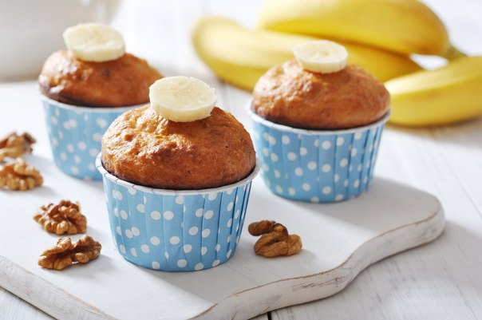

Протеиновые банановые маффины

Высоко-протеиновые, крайне питательные маффины послужат отличным подспорьем для тех, кто не любит терять время за плитой. Благодаря низкому содержанию жиров и большому количеству полезных ингредиентов эти маффины с легкостью можно приравнять к фитнес-перекусу. Из всех компонентов у вас получится около 12 небольших маффинов. Если не увлекаться, этого запаса хватит больше, чем на неделю!...Читать рецепт...